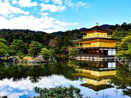
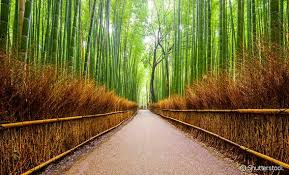
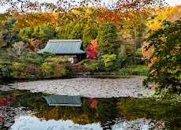
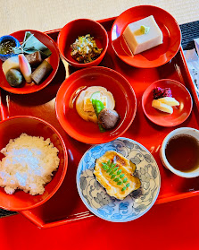
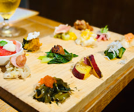

Kyoto é famosa por seus templos históricos, jardins tradicionais e forte preservação cultural. A cidade combina tradição japonesa com sustentabilidade e respeito à natureza.

Templo Kinkaku-ji conhecido como Pavilhão Dourado.
Bairro histórico de Gion com arquitetura tradicional.

Floresta de Bambu de Arashiyama.

Jardins zen preservados nos templos da cidade.

Restaurantes tradicionais japoneses.

Culinária sazonal com ingredientes locais.